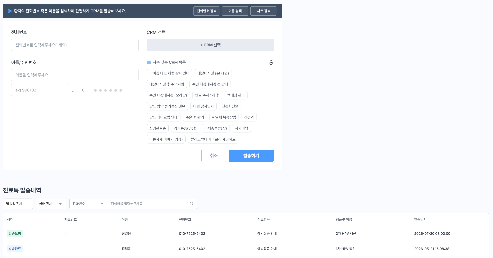
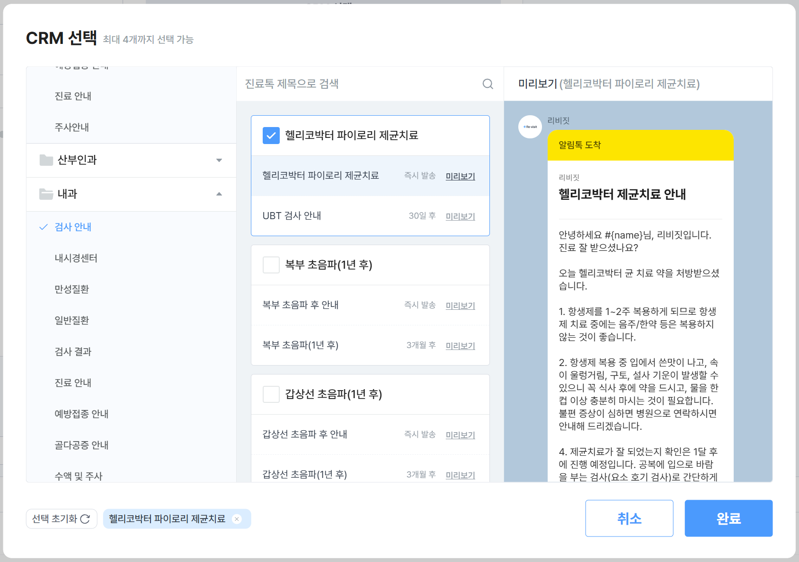
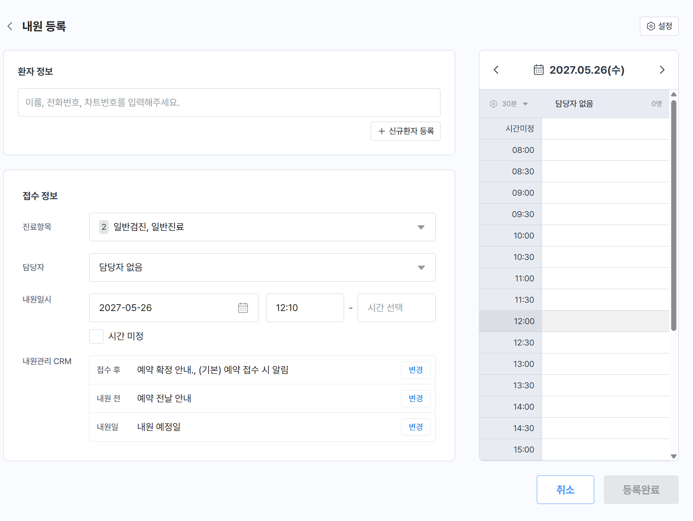
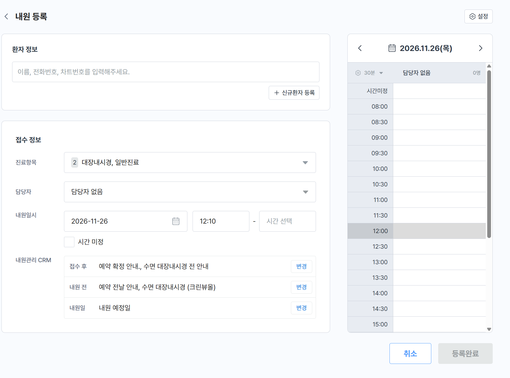
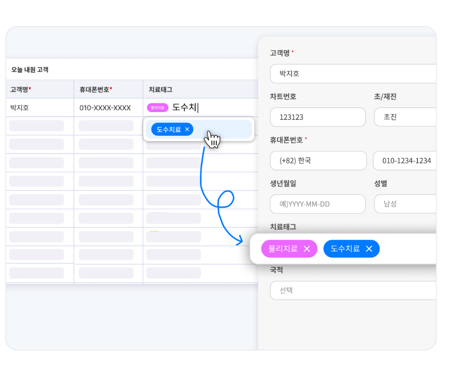
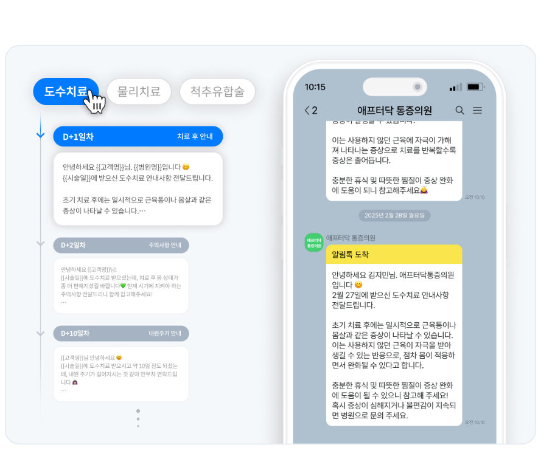
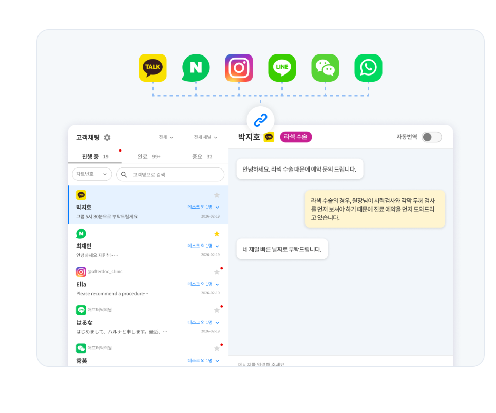
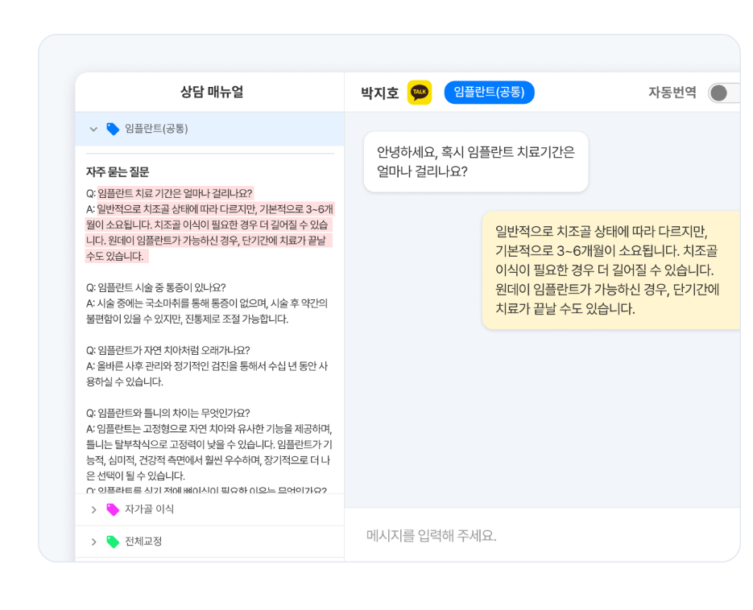
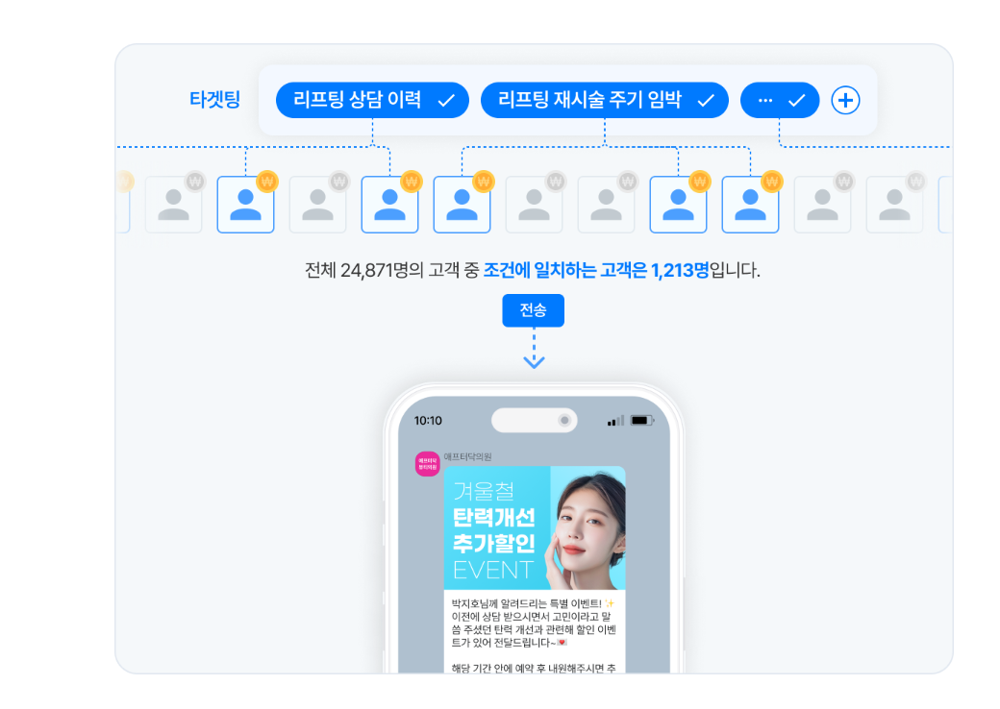

PO의 의사결정과 팀 정렬을 위한 5개 챕터
핵심 차별화 포인트 한 페이지 요약
인터뷰 인사이트 + 경쟁사 리서치
목표 + 타겟 + 재진환자 관리 여정
Phase별 검증 가설 · 추진 일정
성과 측정 지표 · 가설 검증 방법
차세대 EMR AI 재진환자 관리가 가져갈 차별화 포인트 한 페이지 요약
외부 솔루션이 구조적으로 갖지 못하는 영역 = 차세대 EMR이 진입할 영역
고객사 인터뷰 인사이트 + 경쟁사 리서치 기반 현재의 문제 구조 진단
9개 의원 인터뷰 결과 — 재진환자 관리 운영 형태에 따라 세 가지로 자연스럽게 분류
의사랑 CRM 가치를 명확히 인지하고 외부 솔루션에 비용을 지불 중인 의원
의사랑 CRM 한계를 우회하기 위해 자체 약어·메신저·종이장부 체계를 구축
진료 도메인 특성이나 시스템 부담으로 재진환자 관리 자체를 운영하지 않거나 구두 안내에만 의존
인터뷰 결과 도출된 페인포인트가 현장 키워드를 만들고, 모든 키워드가 동일한 운영 구조 요구로 수렴
원장이 만든 약어 체계 + 원무 사전 세팅 템플릿 + 차트 누적 메모 → 의사랑에 없는 기능을 자체 우회로 운영
| 카테고리 | 약어 코드 | 발송 타이밍 | 문자 메시지 (요약) | 비고 |
|---|---|---|---|---|
| 위내시경 F/U | g1 · g2 · g3 · g4 g = Gastroscopy (위내시경) · 숫자 = F/U 주기 (1~4년) |
+12·24·36·48개월 | "{이름}님, 위내시경 검사시기가 되었습니다…" | 1~4년 주기 |
| 대장내시경 F/U | c1 · c2 · c3 · c4 c = Colonoscopy (대장내시경) |
+12·24·36·48개월 | "{이름}님, 대장내시경 검사시기가 되었습니다…" | 원장 처방창 입력 약어 |
| 위·대장 동시 | gc1 ~ gc4 gc = Gastro + Colonoscopy (위+대장) |
+12·24·36·48개월 | "{이름}님, 위·대장내시경 검사시기가 되었습니다…" | 동시 추적 |
| B형간염 백신 | i-b1 · i-b2 · i-b3 · i-b2(5) | 1차 +1~5개월 | "{이름}님, B형간염백신 2·3차 접종시기…" | 백신 종류별 스케줄 변형 |
| 헬리코박터 UBT | amox500 · denol | 제균 후 +8주 | "{이름}님, UBT 검사시기 (4시간 금식)…" | 처방 약품별 분기 |
| 초음파 F/U | abd-ua-b1 · as · as1 · as2 · s · s1 · s2 as = Abdominal Sonography (복부초음파) · s = Sonography (그 외 초음파) abd-ua-b1 = Abdominal Ultrasound Advanced - B1 (간암검진) |
+6·12·24개월 | "{이름}님, 복부·간암·초음파 검사시기…" | 검사 부위별 분기 |
| 기타 백신 | i-z · i-vit · i-prolia · i-bon · i-mmr · i-a | +1·3·6개월 | 대상포진·비타민D·골다공증·MMR·A형간염 각 안내 | + 예약 리마인드·검사 결과 알림 등 |
의사랑 CRM이 해결하지 못한 페인을 리비짓·애프터닥은 어떻게 풀었는가 — 좌(페인) → 우(해결)로 매핑
"환자 반응 데이터를 자산화하는 경영 인텔리전스" · 월 189,000원 (카톡 무료) · 메시지 단가 40원




"방문 전 상담부터 진료 후 재내원까지, 끊기지 않는 환자관리 흐름" · 월 250,000원 · 발송 무제한





외부 솔루션이 3-STEP 자동화 제공에도, EMR 외부라는 구조적 한계로 실제 운영은 수동 3단계 + 자동화 1단계
재진환자 관리 사이클 6개 영역 — 각 솔루션이 어떻게 처리하는가
외부 솔루션의 5단계 워크플로우 → AI 재진환자 관리의 자동화 대체 방식 단계별 매핑
9개 의원 인터뷰에서 도출한 분류를 기반으로, 비즈니스 임팩트와 도입 난이도를 함께 고려한 우선순위
Phase 1 본질: "감지·추천·발송이 작동하는가" → 시스템이 진료 맥락을 누락 없이 감지하고, 추천이 실제 발송 가치로 전환되는지 검증
가설: 환자 정보 입력/검색/템플릿 선택 없이 환자에게 적합한 CRM이 자동으로 추천·발송됨
| 검증 가설 | 측정 방법 | 성공 판단 | 실패 시 진단 |
|---|---|---|---|
| 1 진료 맥락 누락 없이 감지 | 일일 진료 건수 대비 자동 추천 비율 + 누락 사례 카운트 | 일 10건 + 누락 < 5% | 키워드 감지 로직 보강 |
| 2 추천이 사용자가 받아들일 만큼 정확하다 | 컨펌 비율 + 거절 사유 태깅 (잘못된 환자 / 케이스 / 시점) | 80% 이상 | 추천 알고리즘 재학습 |
| 3 컨펌 후 발송 UX가 매끄럽다 | 컨펌→발송 이탈률 + 이탈 시점 분석 | 95% 이상 | UI 단순화 / 컨펌=발송 통합 |
"그 추천이 의료적으로 정확하고, 환자 재방문이라는 실제 가치로 이어지는가"
→ 단순 키워드 매칭을 넘어 의료 데이터의 의미를 해석하는 단계로 발전
가설: 검사·검진 결과 데이터(수치/소견)에 따라 팔로업 시기·내용이 자동으로 세분화되어 발송됨
| 검증 가설 | 측정 방법 | 성공 판단 | 실패 시 진단 |
|---|---|---|---|
| 1 시스템 분기가 의사 판단과 일치 | 분기 케이스 100건 추출 → 의사 사후 검토 + 불일치 사유 태깅 | 90% 이상 일치 | 분기 룰셋 보정 |
| 2 자동 분기 가능한 케이스 범위가 충분히 넓다 | 전체 팔로업 케이스 vs 자동 분기 가능 케이스 + 미커버 유형 분석 | 70% 이상 커버 | 우선순위 케이스 룰셋 추가 |
| 3 자동화가 재진율 상승으로 연결 | Phase 1 환자군 vs Phase 2 환자군의 N일 내 재방문율 비교 | ≥ 30% + 유의미한 상승 | 메시지 톤·발송 시점 재검토 |